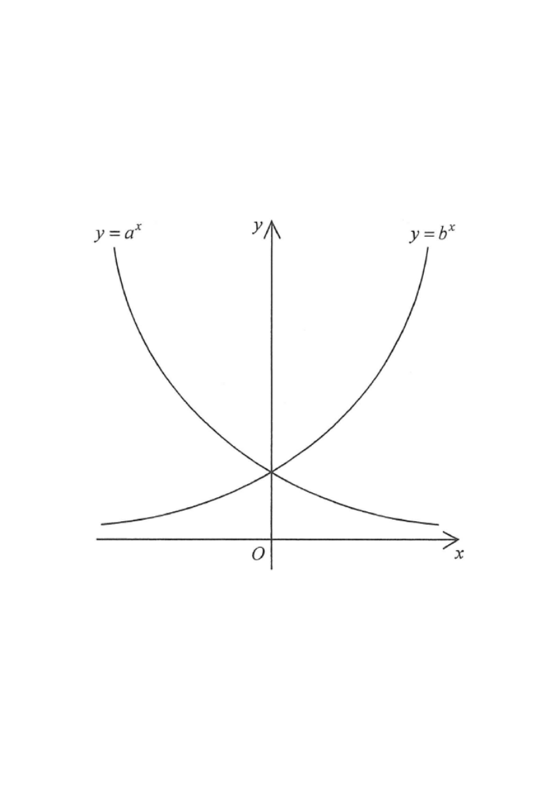

Interactive figure · scroll the solution to animate
Showing the given figure: $y=a^{x}$ falls (decay), $y=b^{x}$ rises (growth).
The figure shows the graph of $y=a^{x}$ and the graph of $y=b^{x}$ on the same rectangular coordinate system, where $a$ and $b$ are positive constants. If the graph of $y=a^{x}$ is the reflection image of the graph of $y=b^{x}$ with respect to the $y$-axis, which of the following are true?

Looking at the figure, the curve $y=a^{x}$ starts high on the left and slopes downwards to the right. So $a^{x}$ is a decreasing function of $x$, which means the base must be a proper fraction:
$$0 < a < 1$$
Hence Statement I ($a < 1$) is TRUE. ✔
The curve $y=b^{x}$ starts low on the left and slopes upwards to the right. So $b^{x}$ is an increasing function of $x$, giving:
$$b > 1$$
Hence Statement II ($b > 1$) is TRUE. ✔
The graph of $y=a^{x}$ is the reflection of $y=b^{x}$ in the $y$-axis. Reflecting in the $y$-axis replaces $x$ by $-x$, so the reflected curve is:
$$y = b^{-x} = \left(\tfrac{1}{b}\right)^{x}$$
Since this reflected curve is $y=a^{x}$ for all $x$:
$$a^{x} = b^{-x} \quad\Longrightarrow\quad a^{x}b^{x} = 1 \quad\Longrightarrow\quad (ab)^{x} = 1$$
This must hold for every $x$ (e.g. put $x=1$):
$$ab = 1$$
Hence Statement III ($ab=1$) is TRUE. ✔
Statements I, II and III are all true. This matches option D.
Quick self-check: choose $b=2$, then $a=\tfrac{1}{2}$. Indeed $a<1$, $b>1$, and $ab=\tfrac12\cdot 2=1$. The curve $y=(\tfrac12)^{x}$ is exactly the mirror image of $y=2^{x}$ in the $y$-axis. ✔
Question. The graph of \(y=p^{x}\) is the reflection of the graph of \(y=q^{x}\) in the \(y\)-axis, where \(q=5\). Then \(p=\) A. \(-5\) B. \(\dfrac{1}{5}\) C. \(5\) D. \(25\) [1 mark]